Notícias do Free Fire
Reportagens próprias, apuração transparente e novidades para a comunidade brasileira. Consulte também nossa política editorial.
Correndo para economizar termina em 16 de outubro
Metas reportadas dão Ouro, Ticket Vira-Carta, pacotes e o Espólio Carteira do Gama. Confira o prazo e confirme no jogo.
Período reportado: 08/10 a 16/10. Verifique o horário na sua conta.Ler matéria →Evento Missions: confira a missão dentro do jogo
Informações reportadas sobre a missão; confirme a disponibilidade e a recompensa diretamente no Free Fire.
Período informado: 13/10/2026 a 02/11/2026. Confira a disponibilidade no jogo.Ler matéria →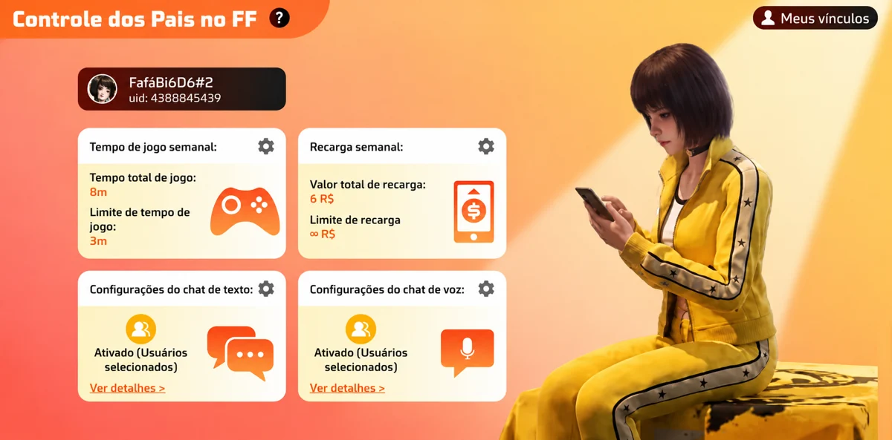
Free Fire: controles parentais têm liberação ainda não confirmada
A data prevista chegou, mas não foi localizada confirmação pública oficial de liberação geral no Brasil.
Ler matéria →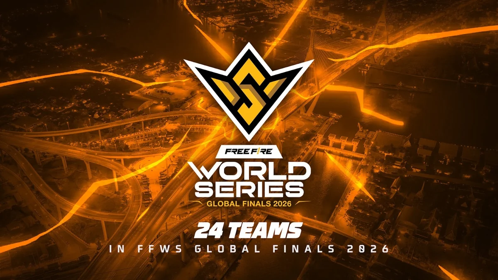
FFWS Global Finals 2026 começa em Bangkok
A Garena confirmou 24 equipes e quatro fins de semana de competição.
Ler matéria →Passe Booyah: Poder do Escorpião
A temporada de novembro aparece catalogada por fonte especializada.
Ler matéria →Servidor Avançado OB56 é esperado para novembro
A janela ainda é previsão; a Garena não confirmou uma data oficial.
Ler matéria →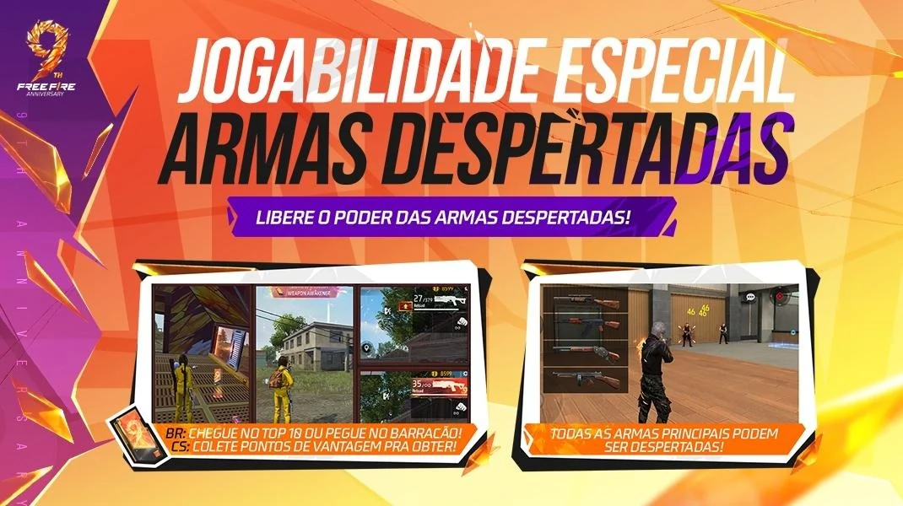
Free Fire celebra 9 anos em 2026
O jogo lançado em 2017 chega aos nove anos; relembre a celebração oficial preparada pela Garena em 2026.
Ler matéria →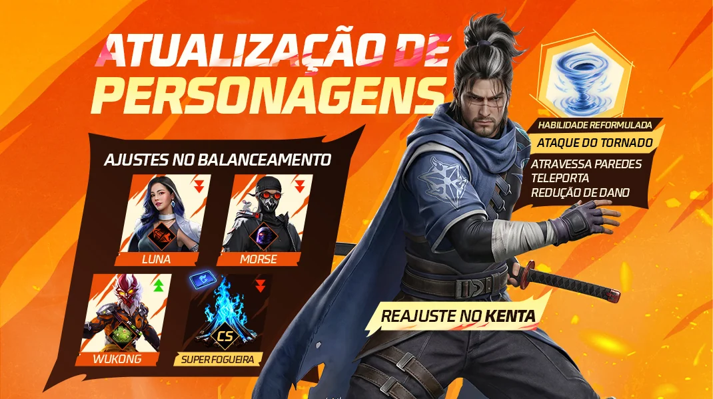
OB55 muda Kenta, Morse, Luna e Wukong: veja os ajustes de personagens
A atualização reformula completamente a habilidade do Kenta, reduz parte da força de Morse e Luna e diminui o tempo de recarga do Wukong.
Ler matéria →OB55 em outubro: novas armas, eventos e balanceamento
A etapa marcada para 1º de outubro reúne a estreia de M7, Skorp, RPK e Harpia, novos eventos aleatórios e uma rodada ampla de ajustes de armas.
Ler matéria →Vira-Carta recebe Conjunto Dino Fogo
Rotação reportada para o servidor brasileiro reúne nove itens e usa Token Padrão.
Período informado: 10/10/2026 a 23/10/2026. Confira a disponibilidade no jogo.Ler matéria →Fluxo W7M é campeão do FFWS Brasil 2026 Split 2
Equipe vence a Grande Final e garante a terceira vaga brasileira no Mundial de Bangkok.
Ler matéria →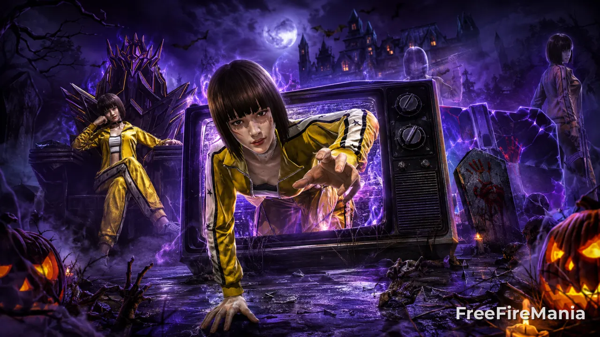
O Oculto: Halloween do Free Fire acontece de 16/10 a 01/11
Anúncio oficial brasileiro informa o período de 16 de outubro a 1º de novembro de 2026.
Período anunciado: 16/10/2026 a 01/11/2026. Ainda não iniciado.Ler matéria →Parede de Gel - Monumento Hokage chega ao Bazar do Drop
Nova rotação reportada para o Brasil fica disponível de 7 a 15 de outubro.
Ler matéria →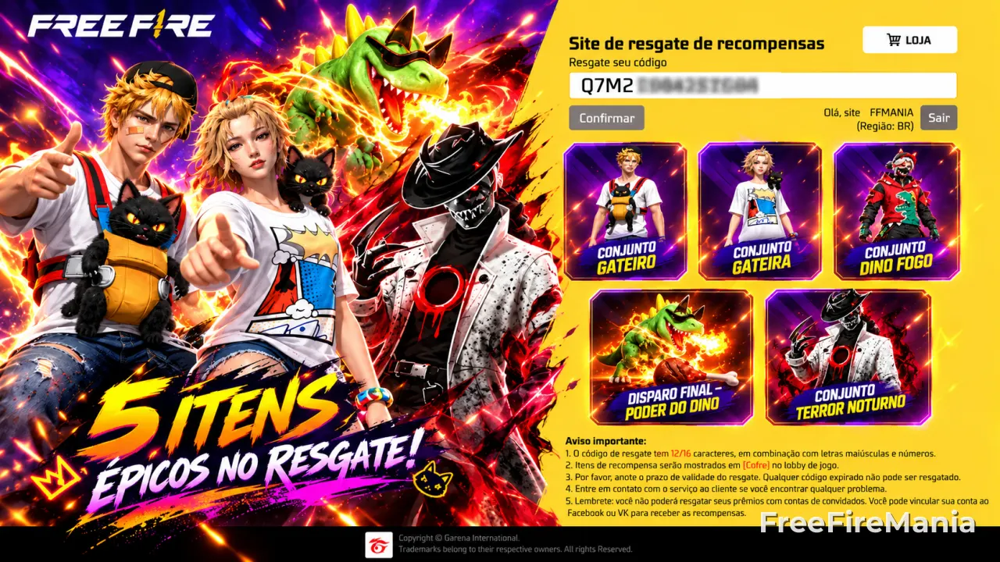
Free Fire tem 5 recompensas de Codiguin em outubro
Lista divulgada via programa FFCP reúne cinco recompensas para outubro de 2026.
Ler matéria →Loja de outubro recebe Conjunto Zephyr, Senhor dos Ventos
Rotação reportada para o Brasil começou em 1º de outubro e tem previsão até 30 de outubro.
Ler matéria →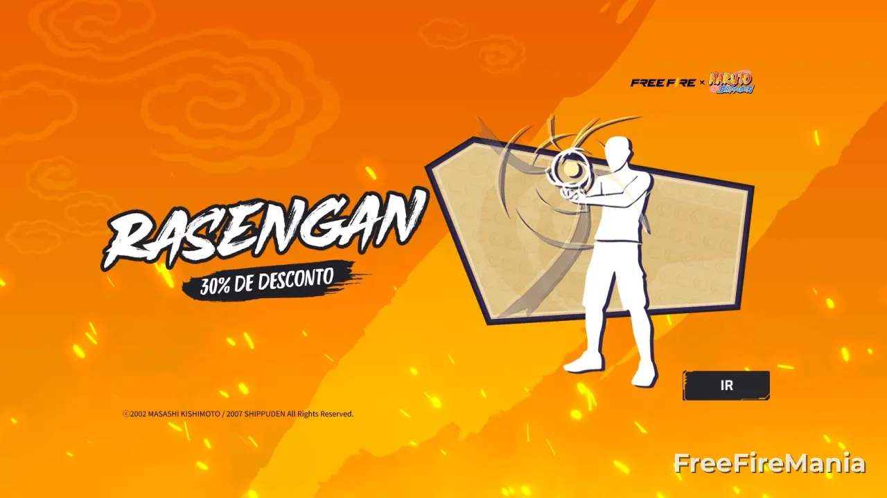
Bazar do Drop recebe Rasengan em nova rotação
Seleção reportada para o servidor brasileiro fica disponível de 3 a 11 de outubro.
Ler matéria →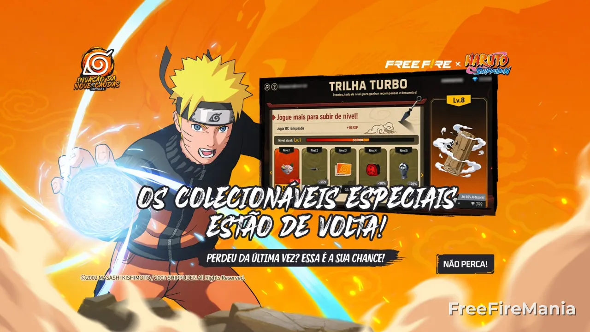
Trilha Turbo com Rock Lee e itens de NARUTO
Rotação temática foi identificada em dados do jogo e é tratada como informação reportada.
Ler matéria →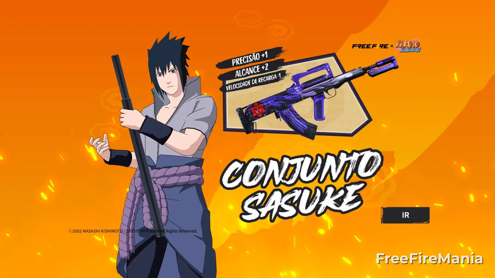
Vira-Carta com Conjunto Sasuke: edição de outubro
Calendário especializado reporta Conjunto Sasuke, Groza - Sasuke e Conjunto Bermuda Angelical na rotação.
Ler matéria →Virada Suprema recebe Punho - Raio do Ninjutsu
Nova rotação reportada para o servidor brasileiro fica disponível até 15 de outubro.
Ler matéria →Passe Booyah: Guardiões do Oeste
Temporada de outubro traz o tema do Velho Oeste e progressão Premium.
Ler matéria →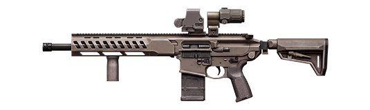
M7, Skorp, RPK e Harpia chegam na etapa de outubro da OB55
A Garena marcou para 1º de outubro a estreia das quatro armas no Contra Squad e novas fontes de loot no Battle Royale.
Ler matéria →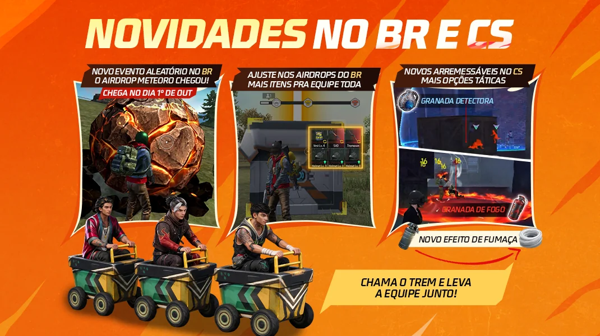
Airdrops viram meteoros e Máquinas de Vendas ganham descontos
A etapa de 1º de outubro adiciona dois eventos aleatórios e ajustes nos airdrops do Battle Royale.
Ler matéria →Loja Prime de outubro traz Conjunto Cobra: Modo Fúria
Seleção reportada para outubro reúne seis itens; valores e disponibilidade devem ser conferidos dentro do jogo.
Ler matéria →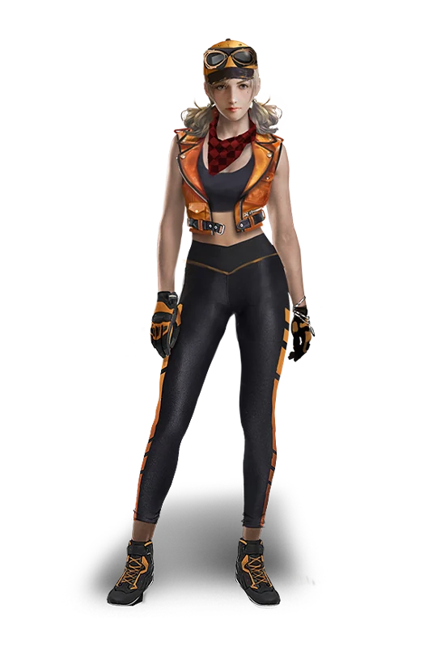
Misha deixa de ter efeito no cavalo em mudança de outubro
A alteração foi reportada por fonte parceira do programa de criadores; confira os detalhes e a origem da informação.
Ler matéria →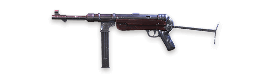
MP40, UMP, Vector, M1887 e M590: mudanças da OB55
Ajustes de alcance, mobilidade, dano e precisão na etapa de outubro.
Ler matéria →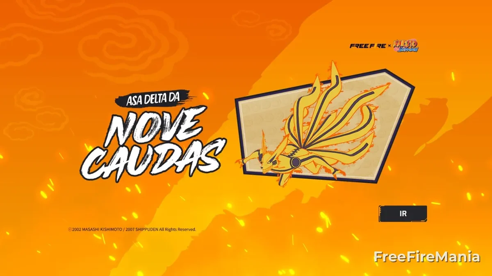
Bazar do Drop com Nove-Caudas: edição de setembro
A rotação brasileira começou em 30 de setembro e tem término reportado para 13 de outubro.
Ler matéria →Invasão da Nove-Caudas: colaboração de setembro e outubro
Hinata, Academia Ninja, novas mecânicas e recompensas fazem parte da colaboração oficial.
Ler matéria →Simples para navegar. Fácil para acompanhar.
O FRIFAS BRASIL reúne notícias, atualizações, eventos, campeonatos e guias em um portal independente, organizado e direto para a comunidade brasileira de Free Fire.